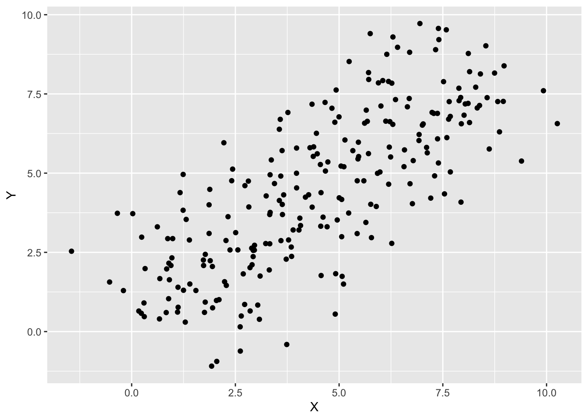
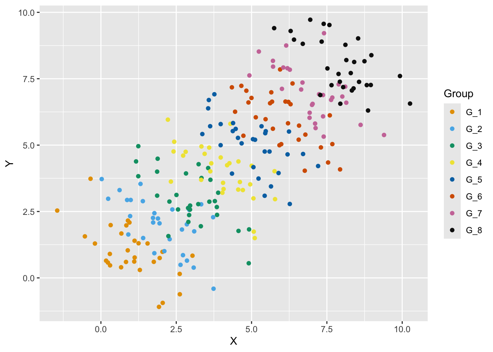
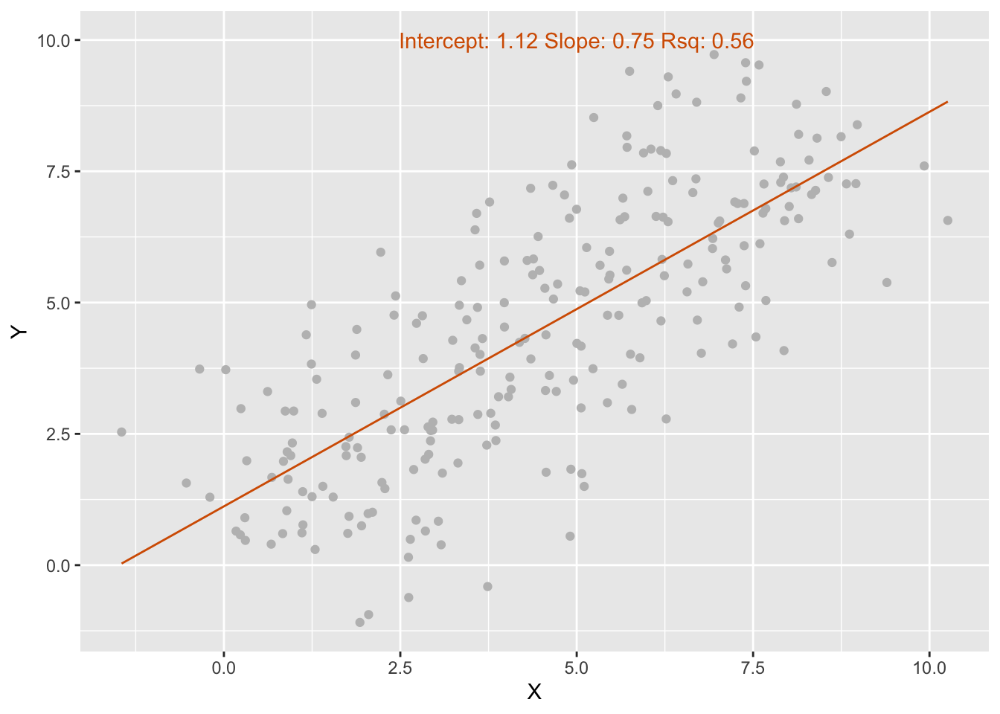
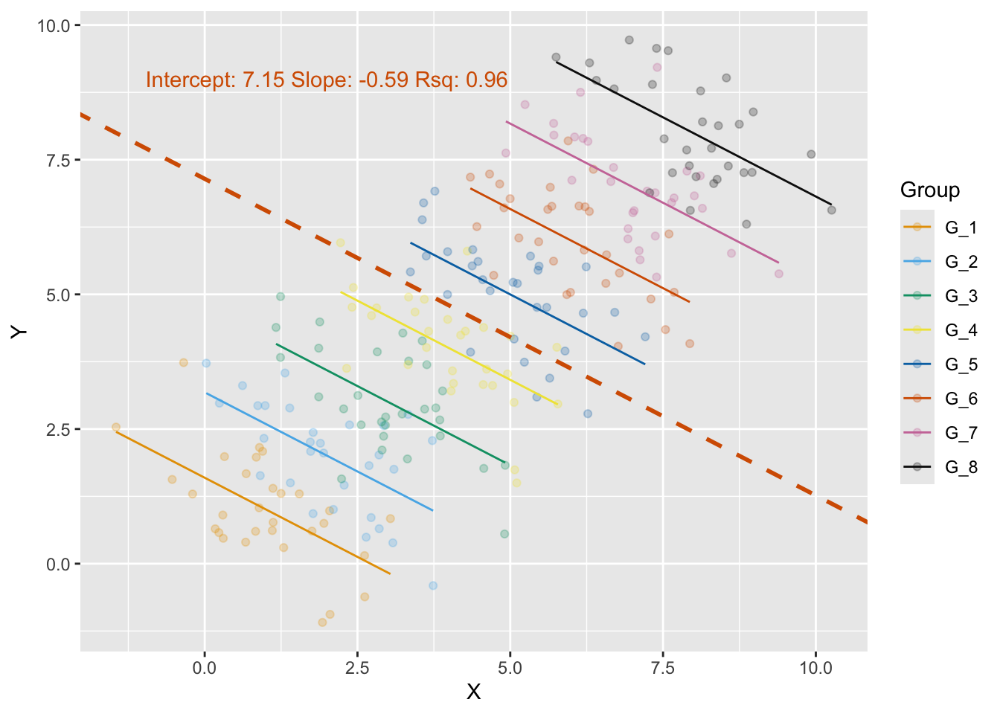

my_string <- "Autumn Clock Club 2026"
print(paste0("Hello, ", my_string, "!"))[1] "Hello, Autumn Clock Club 2026!"This is a ‘Quarto’ document. Quarto enables you to put content and executable R code together into a single document. Quarto .html files are rendered from .qmd files, which are similar to Jupyter Notebooks. If you open a .qmd in RStudio, you can make changes to the code, and press ‘Render’ to update outputs and convert this into a .html (web page) document. To learn more about Quarto, see https://quarto.org.
Below is some simple R code. We store some text in a variable ‘my_string’, and output this with a friendly greeting.
When we run this, quarto pastes the output below the code. You would see the same output if you ran this code directly in RStudio.
my_string <- "Autumn Clock Club 2026"
print(paste0("Hello, ", my_string, "!"))[1] "Hello, Autumn Clock Club 2026!"# you may need to run: install.packages(c("dplyr","ggplot2","lme4","bayestestR","MuMIn"))
library(dplyr) # many functions for handling data
library(ggplot2) # for plotting
library(lme4) # linear mixed effects models (LMER)
library(bayestestR) # for generating simpson's data
library(MuMIn) # for r.squaredGLMM
okabe_ito <- c(
"orange" = "#E69F00",
"sky_blue" = "#56B4E9",
"green"= "#009E73",
"yellow"= "#F0E442",
"blue"= "#0072B2",
"red"= "#D55E00",
"pink"= "#CC79A7",
"black"= "#111111"
)
PLOTS_DIR <- "part1_figures"
dir.create(PLOTS_DIR, showWarnings = FALSE, recursive = TRUE)set.seed(2026) # set RNG seed for simpson's data generation
df <- simulate_simpson(
n = 30,
r = -0.6,
groups = 8,
difference = 1,
group_prefix = "G_"
)
names(df) <- c("X", "Y", "Group")Here, we are generating some data for this tutorial. The options (parameters) we’re passing into this method here allow us to specify exactly the relationship present in this data. Simulated data where we know the exact relationship present in the data is usually a good way to test our understanding when applying a new type of statistical model.
Typically, R data takes the form of ‘data.frames’ (df): a representation of data in column and row form, much like a spreadsheet.
When working with new data, whether it is something we’ve generated or loaded in from a .csv file, we should inspect the structure of the data, and visualise relationships between variables in the table:
# What does the table look like?
head(df) X Y Group
1 1.2924088 0.2983933 G_1
2 0.3233638 1.9880203 G_1
3 1.1201403 0.7674235 G_1
4 1.2494154 1.3037366 G_1
5 0.6791524 1.6714993 G_1
6 -0.3442916 3.7334076 G_1# What does the relationship look like? (scatter plot of the X and Y variables)
ggplot(df, aes(x=X, y=Y))+
geom_point() 
# Save this plot
ggsave(paste0(PLOTS_DIR, '/', "scatter", ".pdf"))Interesting - it looks like there is a positive linear correlation between the two variables - as X increases, Y also generally increases.
However, we missed something when we looked at the raw data above - this data actually contains samples from 8 different groups. In general, groups in data could be subjects, patients, sites, cells, plants, animals, etc. We should check whether this relationship also holds for the groups within.
# Scatter plot, colour by group
ggplot(df, aes(x=X, y=Y, color=Group))+
geom_point() + scale_colour_manual(values = unname(okabe_ito))
ggsave(paste0(PLOTS_DIR, '/', "scatter_with_groups", ".pdf"))Wow - it turns out these groups actually each have a negative linear correlation - as X increases, Y decreases. When viewed together, overlap between groups makes the overall relationship appear positive.
This is an example of Simpson’s Paradox - where the trends in our data change substantially when we consider its group structure. Linear mixed effects models can help us account for this, and we’ll see why that is in the following sections.
Yes, you don’t need to have this exact situation in your data to use LMERs.
You might want to use LMERs whenever you have group structure in your data. For example, if you wanted to capture the rate of evening melatonin increase over 6 hourly samples for each of 10 study participants, or change in clock gene periodicity over daily samples for plants at 10 different sites. In both cases, each sample is not independent, but related to other samples within the same group. As such, it’s important and beneficial to model that there are group differences, and helps avoid the issue of pseudoreplication.
Let’s make a simple linear regression model for our Simpson’s paradox data.
simpsons_lm <- lm(Y ~ X, data=df)Here, we are setting up a linear regression model (lm) where we define that Y (our response variable) is some function of X (our predictor variable). For example, at any given time, Y might be double the value of X (Y = 2X): if X was 3, Y would be 6, and so on. We would call this a positive linear correlation, with a slope of 2.
Alternatively, if Y=-2X, we would call this a negative linear correlation with a slope of -2. Fitting a model helps you measure the relationship between your variables. It finds a number for important values such as the slope.
Finally, we store our model inside a variable called ‘simpsons_lm’ - this isn’t strictly necessary, but is helpful in case we want to look at our model again later.
OK, let’s look at the output of this model:
summary(simpsons_lm)
Call:
lm(formula = Y ~ X, data = df)
Residuals:
Min 1Q Median 3Q Max
-4.3352 -1.0067 -0.0198 1.1210 3.9655
Coefficients:
Estimate Std. Error t value Pr(>|t|)
(Intercept) 1.11957 0.22011 5.086 7.4e-07 ***
X 0.75121 0.04279 17.557 < 2e-16 ***
---
Signif. codes: 0 '***' 0.001 '**' 0.01 '*' 0.05 '.' 0.1 ' ' 1
Residual standard error: 1.653 on 238 degrees of freedom
Multiple R-squared: 0.5643, Adjusted R-squared: 0.5625
F-statistic: 308.3 on 1 and 238 DF, p-value: < 2.2e-16There’s a lot of information here, the most important being the intercept and slope. We’ve already covered the slope. The intercept is simply the value of Y when X is 0, which offsets the trend (e.g. Y = 2X + Slope). You can find the intercept and slope in the table above, under the first column (‘Estimate’) of the table underneath ‘Coefficients:’.
simpsons_lm_intercept <- simpsons_lm$coefficients[1]
simpsons_lm_slope <- simpsons_lm$coefficients[2]
print(paste0("Intercept: ", round(simpsons_lm_intercept, 5), " Slope: ", round(simpsons_lm_slope, 5)))[1] "Intercept: 1.11957 Slope: 0.75121"To see what these represent, let’s visualise the data and the regression line fit by our model:
simpsons_lm_rsq <- summary(simpsons_lm)$adj.r.squared
simpsons_lm_plot <- ggplot(df, aes(x=X, y=Y))+
geom_point(color="grey") + # scatter points
geom_line(aes(y=predict(simpsons_lm)), color=okabe_ito["red"]) + # add regression line
annotate("text", x=5, y=10,
color=okabe_ito["red"],
label=paste0("Intercept: ", round(simpsons_lm_intercept, 2), " Slope: ", round(simpsons_lm_slope, 2), " Rsq: ", round(simpsons_lm_rsq, 2)))
show(simpsons_lm_plot)
ggsave(paste0(PLOTS_DIR, '/', "simpsons_lm", ".pdf"))The model slope is 0.75 - as X increases by 1, Y increases by 0.75 (a positive linear correlation).
The intercept - the value of Y when X is 0 - is 1.12.
To best fit our regression line to the data, the model intercept helps us place our line vertically, and the model slope helps us rotate it. Using our previous notation, this regression line is produced with the formula Y=0.75X + 1.12.
Not previously mentioned: the model R2 (Rsq) is 0.56. R2 is a value that ranges between 0 and 1, that tells us how ‘good’ the fit intercept and slope are at describing the relationship in the data. A value of 1 represents an (unrealistically) perfect fit, where all the points fall on the regression line. A value of 0 means that none of the variability in the data is captured by the model. In reality, values of 0 or 1 are very rare - most fall somewhere in between. 0.56 represents a moderate fit: however we know that this model is mistaken, as it doesn’t consider the group structure. To learn more about R2, see Coefficient of determination.
However, we know that this is not the true nature of the data. Let’s see how fitting a linear mixed effect regression model (LMER) differs.
To fit an LMER, we use a library called ‘lme4’. Libraries extend what we can do with R code, by adding extra functionality.
simpsons_lmer <- lmer(Y ~ X + (1|Group), data=df)Just as before, we are setting up a model where we define that Y (our response variable) is some function of X (our predictor variable). In LMER terminology, our predictor X is a ‘fixed effect’. It’s something that we assume has a consistent ‘effect’ on the response variable across any groups we have within the data.
In our visualisation above, we saw that each group in this dataset had a similar negative correlation (i.e, the same slope), but were slightly offset from each other. In an LMER model, we can capture these different group-level offsets using a random effect. This is what the new term ‘(1|Group)’ is doing: the intercept (denoted by 1) varies by/is dependent upon the ‘Group’ variable. Even if we aren’t primarily interested in the difference between groups, adding this random effect ensures we are modelling the data properly. The grouping variable must be categorical (a factor), and a good rule-of-thumb is to have at least 5 different groups in your data (e.g 5 subjects or sampling sites), though variance estimates can be unreliable below 10-20 groups.
Note that LMERs are also referred to as LMMs, mixed-effects models, multilevel models, and hierarchical models.
Before we look at the LMER output table, let’s first visualise the LMER model:
simpsons_lmer_summary <- summary(simpsons_lmer)
# group-level intercepts and slope
simpsons_lmer_intercept <- simpsons_lmer_summary[["coefficients"]][1, 1]
simpsons_lmer_slope <- simpsons_lmer_summary[["coefficients"]][2, 1]
# overall model Rsq
simpsons_lmer_rsq <- r.squaredGLMM(simpsons_lmer)[2]
# plot with per-subject intercepts
simpsons_lmer_plot <- ggplot(df, aes(x=X, y=Y, colour=Group))+
geom_point(alpha=0.25) +
# add participant level regression lines
geom_line(aes(y=predict(simpsons_lmer))) + scale_colour_manual(values = unname(okabe_ito)) +
# add group-level regression line
geom_abline(intercept=simpsons_lmer_intercept, slope=simpsons_lmer_slope, linewidth=1, color=okabe_ito["red"], linetype="dashed") +
annotate("text", x=2, y=9,
color=okabe_ito["red"],
label=paste0("Intercept: ", round(simpsons_lmer_intercept, 2),
" Slope: ", round(simpsons_lmer_slope, 2),
" Rsq: ", round(simpsons_lmer_rsq, 2)))
show(simpsons_lmer_plot)
ggsave(paste0(PLOTS_DIR, '/', "simpsons_lmer", ".pdf"))This looks completely different!
Each group has its own regression line. They have the same slope, which is now correctly negative. Furthermore, as we specified that the intercept can vary, the regression lines can have different vertical positions, which allows better fit to group data. Consequently, the overall model fit (Rsq=0.96) has drastically improved.
At this point, we might ask: why use LMERs for this? Why not just run 8 separate linear regressions, one for each group? Well, an additional benefit of LMERs is that they implement ‘partial pooling’. We assume the groups are a sample from a larger population (for example, 8 people selected at random: note that the structure of the simpson’s paradox data is quite unrealistic - we’ll see more realistic data in part 2. ). Rather than generate 8 completely unique intercepts (8 separate regressions, or ‘no pooling’), we estimate a common intercept, and model the random intercepts as deviations from this common value. This has the added benefit of using information from groups with more samples to improve the model estimates for groups with fewer samples.
As such, we get an intercept and slope that represent the common trend across all groups (the dashed red regression line, with intercept 7.15 and slope -0.59), as well as the intercepts for individual groups (which are visualised as regression lines above):
coef(simpsons_lmer)$Group
(Intercept) X
G_1 1.595661 -0.5877965
G_2 3.181210 -0.5877965
G_3 4.766760 -0.5877965
G_4 6.352309 -0.5877965
G_5 7.937859 -0.5877965
G_6 9.523409 -0.5877965
G_7 11.108958 -0.5877965
G_8 12.694508 -0.5877965
attr(,"class")
[1] "coef.mer"As an exercise: fit separate linear models for each group, and compare their intercepts to those provided by the LMER.
Note that, in this data, only the intercept varies between groups. It is very likely that the slope may vary between groups too, which LMERs can also handle - we’ll cover that in Part 2.
As before, we can also find these values in the tabular output:
show(simpsons_lmer_summary)Linear mixed model fit by REML ['lmerMod']
Formula: Y ~ X + (1 | Group)
Data: df
REML criterion at convergence: 627.1
Scaled residuals:
Min 1Q Median 3Q Max
-2.34012 -0.67944 0.05928 0.63580 3.06541
Random effects:
Groups Name Variance Std.Dev.
Group (Intercept) 15.1217 3.8887
Residual 0.6429 0.8018
Number of obs: 240, groups: Group, 8
Fixed effects:
Estimate Std. Error t value
(Intercept) 7.14508 1.39591 5.119
X -0.58780 0.05244 -11.209
Correlation of Fixed Effects:
(Intr)
X -0.169Like the table under ‘Coefficients:’ for the linear regression model, we find a table with the model intercept, and slope for the X variable, under ‘Fixed effects:’.
print(paste0("Intercept: ", round(simpsons_lmer_intercept, 4), " Slope: ", round(simpsons_lmer_slope, 4), " Rsq: ", round(simpsons_lmer_rsq, 2)))[1] "Intercept: 7.1451 Slope: -0.5878 Rsq: 0.96"Under ‘Random effects:’, we find useful information on the how well the model captures variance between our groups. This tells us that there is a variance between groups of 15.1217 with a standard deviation of 3.8887, and a residual (unexplained) variance of 0.6429 with standard deviation of 0.8018. As the group standard deviation is larger than the residual, this tells us most variability is between groups, rather than within.
It should be noted that your data table usually needs to be in ‘long’ format to work with plotting functions and LMERs in R.
You can check this by looking at the data table structure:
# What does the table look like?
head(df) X Y Group
1 1.2924088 0.2983933 G_1
2 0.3233638 1.9880203 G_1
3 1.1201403 0.7674235 G_1
4 1.2494154 1.3037366 G_1
5 0.6791524 1.6714993 G_1
6 -0.3442916 3.7334076 G_1As the identifying column (Group) is repeated, this is referred to as ‘long’ format, where each row represents a sample.
If you instead had 1 row per group, this would be ‘wide’ format.
If your data is in wide format, not to worry - there are methods in R (and other languages) to help you ‘reshape’ your data from one format to the other.
You can learn more about wide and long formats here.
In this document, we looked at the importance of capturing group-level differences in data, and how to apply both linear regression models and linear mixed effects regression models in the R programming language.
Now that we have seen how LMERs work on some toy data, let’s apply them to answer questions in real chronobiological data.